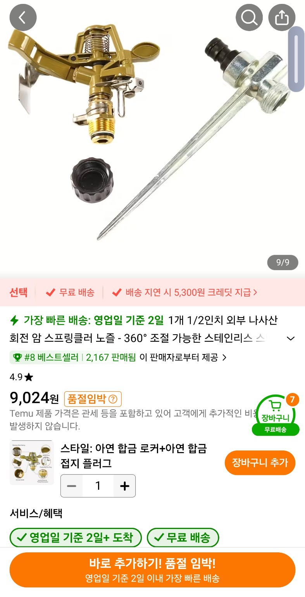
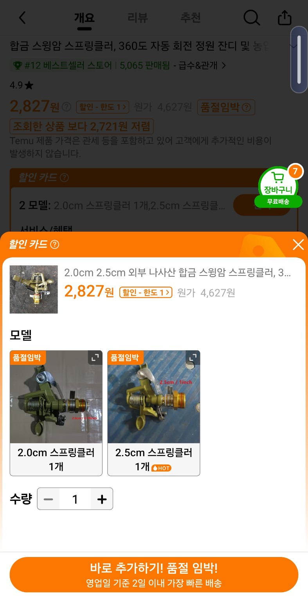

핵심 결론
| 배관 나사 호칭 | 배관 호칭 | 수나사 바깥지름 | 판매 표기 예 |
|---|---|---|---|
| 1/2″ | 15A | 약 20.9mm | 20mm / 2.0cm급 |
| 3/4″ | 20A | 약 26.4mm | 25mm / 2.5cm급 |
| 1″ | 25A | 약 33.2mm | 32~33mm급 |
이번 비교: 첫 제품의 1/2″ 외부 수나사는 두 번째 제품의 2.0cm 옵션과 대응하고, 2.5cm 옵션은 대체로 3/4″ 쪽이다.
암나사·수나사 관계
- 1/2″ 수나사에서 약 20.9mm는 나사산 봉우리의 최대 외경이다.
- 암나사는 수나사의 봉우리가 들어가는 골 쪽이 같은 호칭에 맞도록 만들어진다.
- 암나사 입구의 나사산 봉우리끼리 재면 더 작은 값이 나올 수 있다.
- 1/2″ 수나사 ↔ 1/2″ 암나사처럼 같은 호칭끼리 연결한다.
제품별 해석
| 제품 | 표기 | 해석 |
|---|---|---|
| 첫 번째 제품 | 1/2인치 외부 나사산 | 1/2″ 수나사 · 외경 약 20~21mm |
| 두 번째 제품 | 2.0cm | 1/2″ 쪽 |
| 두 번째 제품 | 2.5cm | 3/4″ 쪽 |
대화 중 이미지



두 번째와 세 번째 파일은 동일 SHA-256이지만 각각의 대화 첨부 기록을 보존했다.